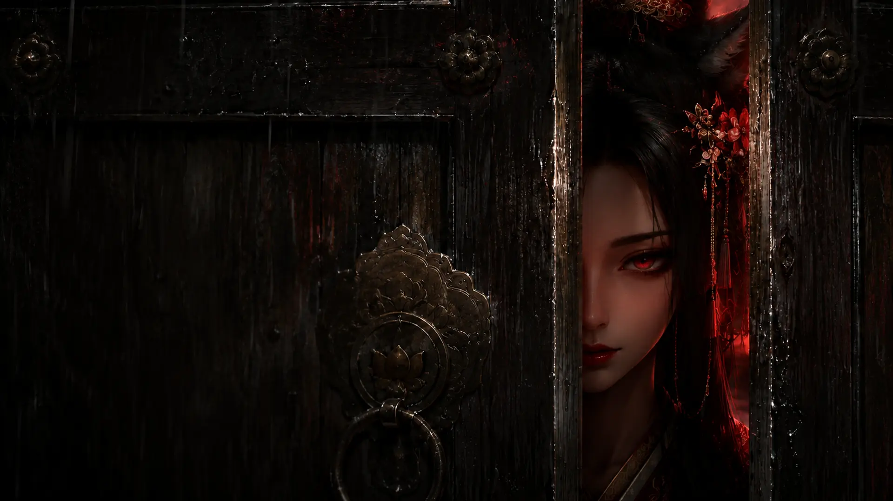

櫻隱
選
音
景
藏
牒
門
重
讓她說下去
→
緣
九尾手書命牒
緣之卷
緣
緣之門
業
業之門
命
命之門
禁
禁之門
無字之門
四道命痕已經認出你
讓字回來
命痕已留下
狐
命館正在換景……
顯影的是你親眼走過的幕；未見之景仍覆著鎖印
命館藏景
×
往前走。她只收藏你親眼看過的幕。
返回藏景
‹
›
命痕管理
要讓命館忘記今晚嗎？
名字、選擇、四卷判讀、藏景與秘密終幕都會從這台裝置清除。
保留命痕
清除並重來
此互動命館需要啟用 JavaScript。